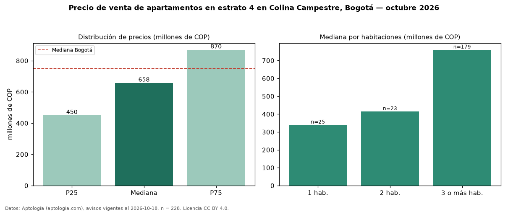

Precio de venta de apartamentos en estrato 4 en Colina Campestre, Bogotá — octubre 2026
Con 228 avisos vigentes, el precio mediano de apartamentos en estrato 4 en venta en Colina Campestre (localidad de Suba), Bogotá es COP 658 millones. Eso es 3 % menos que la mediana de toda la vivienda de estrato 4 de Colina Campestre (COP 680 millones, n = 287); este segmento reúne el 79 % de esos avisos. Por metro cuadrado, la mediana es COP 7,38 millones/m² (n = 228), 5 % por encima del conjunto de referencia (COP 7,01 millones/m²). El área mediana anunciada es 90 m². El segmento con más oferta es el de 3 o más habitaciones (179 avisos, mediana COP 760 millones); pasar de 1 habitación a 3 o más habitaciones cambia la mediana +124 %. La administración mediana declarada es COP 500.000 al mes (n = 192). La mitad central de los avisos va de COP 450 millones a COP 870 millones (razón 1,9), una dispersión moderada. La mediana de todos los apartamentos en venta de Bogotá es COP 750 millones (−12 % de diferencia). Datos: Aptología (aptologia.com), CC BY 4.0 — https://www.aptologia.com/venta/bogota/colina-campestre. Archivos: PDF, CSV con las cifras y gráfica PNG.

| Avisos únicos | 228 |
|---|---|
| Percentil 25 | COP 450.000.000 |
| Mediana | COP 657.500.000 |
| Percentil 75 | COP 870.000.000 |
| Mediana por m² | COP 7.377.844 |
Fuente: avisos vigentes de portales inmobiliarios recopilados por Aptología, deduplicados (mínimo 30 avisos únicos por celda). Precios pedidos, no cerrados. Fecha: 2026-10-18.